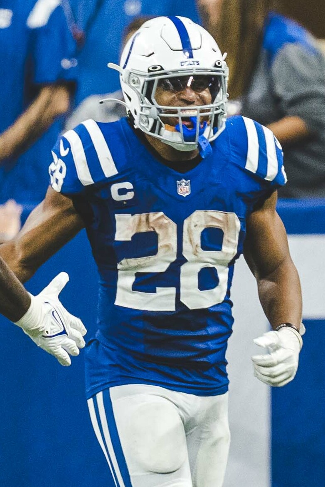

The Undefeated Team
Draws The Hottest One
Willis's Willies are 4-0 and face the team that scored the most points last week. The defending champion gets his quarterback back.

Jonathan Taylor: All-Pro Reels / CC BY-SA 2.0
.jpg){kind=link}
Week 3
The slate
Two weeks in, one team is undefeated and the gap between second and ninth is two results. The schedule has put the 4-0 team against the highest-scoring team of last week, and the two 1-3 sides against each other.
The game
4-0 against the highest score of week 2
KnightRider_85 has not lost a result all season and did it last week with his starting quarterback injured and a replacement from his own bench. brunosilvadev scored 169.45, more than anyone else managed, and has spent the only FAAB anyone has spent.
The two rosters are opposites. The Willies are third in roster strength and ninth of ten at quarterback. Skinned Knee Varsity is ninth in roster strength and dead last at quarterback, carrying two of them, and is scoring anyway on Jonathan Taylor and Kenneth Walker. Somebody's story about how to build a superflex team is going to look worse by Monday.
The rest
Two former champions, and two teams that have lost their way
geauxjack takes a 3-1 record into a game with the defending champion, who is 2-2 and getting Kyler Murray back from concussion protocol this week. evspade has started Jaxson Dart and Bo Nix in the superflex in Murray's absence and got 0.80 and 16.12 out of them. geauxjack is 1-4 against him all time, which is the one matchup in this league he has never owned.
Rancor Fajitas and Fryder-Man are both 1-3 and both have better rosters than that. Merlyn has the fourth-most points of any team in week 2 and a 1-3 record to show for two weeks of drawing the wrong opponent. ceefry owns the second-strongest roster in the league by projection and has scored fewer points than seven other teams. Whoever loses this is 1-5 or 2-4 and effectively chasing the field in September.
Who Dey and the Blowfish leads the league in points and is 2-2, and draws 4th and 35, who is 2-2 with the quietest roster in the league and a bench that has totalled 74.80 across two weeks. Neither has beaten the other before, because derrek777 arrived this season.
Quarterback watch
One coming back, one still out
Kyler Murray is expected to clear concussion protocol and start against Tampa Bay, which gives the defending champion his superflex back after two weeks of 0.80 and 16.12. Sam Darnold is expected back at practice in some capacity and his coach has called the situation up in the air, so Willis’s Willies may well start C.J. Stroud again after he returned 17.52 in the same slot.
Puka Nacua is the other one worth watching, and not only by the manager who started him while he was inactive. Sean McVay said he was hopeful rather than sure about Denver this week.